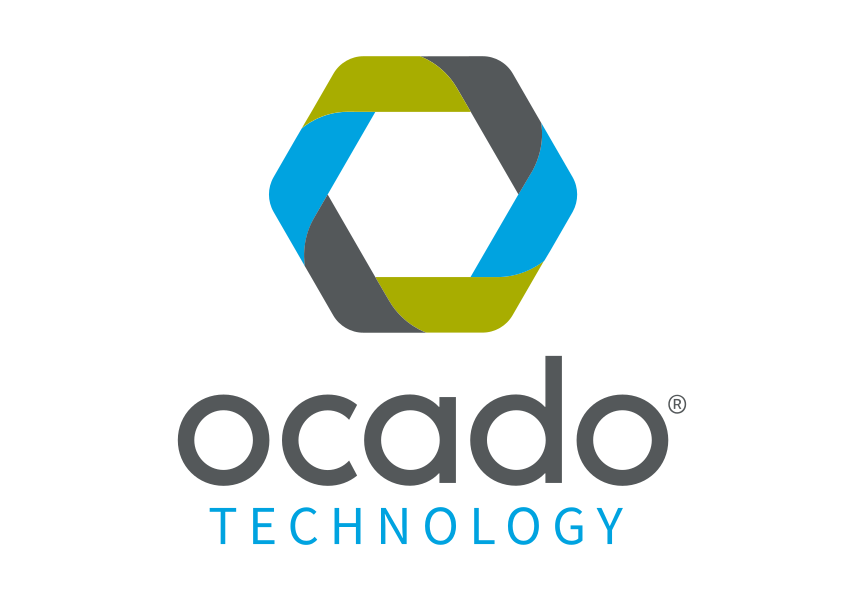
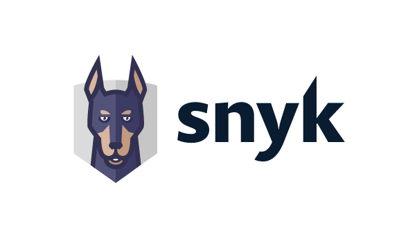
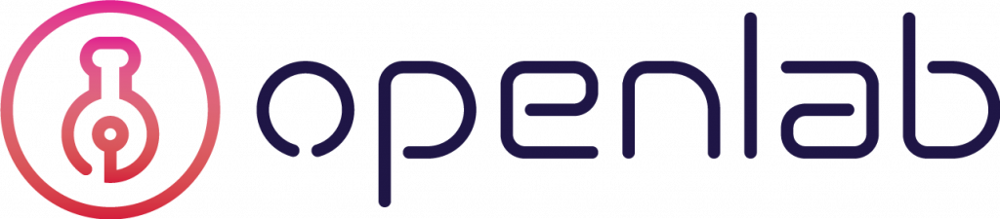

Sponsors
AdoptOpenJDK is proud to receive contributions from many companies, both in the form of monetary contributions in exchange for membership or in-kind contributions for required resources.
Want to become a sponsor?
We are always looking for sponsors to help us with the ongoing costs of keeping the project running. Without these kind donations the project wouldn't be able to run. Drop us an email to find out more.

Platinum sponsors provide the largest financial donations or contribute the largest share of infrastructure to the AdoptOpenJDK project. Without these companies, the project would not be able to provide the quality, speed and availability of test coverage that it does today. (Listed alphabetically).
| Amazon Web Services (AWS) is the world’s most comprehensive and broadly adopted cloud platform, offering over 165 fully featured services from data centers globally. Millions of customers including the fastest-growing startups, largest enterprises, and leading government agencies trust AWS to power their infrastructure, become more agile, and lower costs. | |
| Since its founding in 2002, Azul Systems has been exclusively focused on Java, and on producing high quality JDKs, JREs, and JVMs. We are active contributors to OpenJDK, serve on the JCP Executive Committee and JSR expert groups, and are members or project leads in OpenJDK projects including the OpenJDK Vulnerability Group. Azul produces free community builds of OpenJDK with Zulu and provides commercial support for builds of OpenJDK with its Zulu Enterprise and Zulu Embedded offerings, which include timely security updates, bug fixes, long term availability & updates of builds, and access to our award-winning Support team. | |
| GoDaddy powers the world's largest cloud platform dedicated to small, independent ventures. With over 18 million customers worldwide and more than 77 million domain names under management, GoDaddy is the place people come to name their idea, build a professional website, attract customers and manage their work. Our mission is to give our customers the tools, insights and the people to transform their ideas and personal initiative into success. To learn more about the company visit GoDaddy.com. | |
 |
For 20+ years, IBM has been one of the largest investors and contributors to the Java platform, and an active member of the developer community. IBM offers a comprehensive portfolio of solutions, services and systems for Java developers supporting mobile, web, cognitive, analytics and IoT. IBM Cloud offers Java developers a robust, cloud-development platform to speed app development, including access to enterprise services and APIs, and scalable hosting in hybrid, public, dedicated and/or on premise environments. |
 |
Microsoft Azure believes that all individuals and groups should be empowered with the full freedom and power of the cloud. Azure offers the trust, transparency, and humanity that all developer communities need to navigate, thrive, and endure in this increasingly cloud-powered world. Microsoft's commitment to Open Source communities extends to the Java ecosystem, and supporting the AdoptOpenJDK effort is part of our mission to empower developers of all programming languages. With Azure, Java developers can find Cloud solutions for developing, building, and running applications, in ways that will increase their productivity, and free them to do more. |
|  | Ocado Technology develops the innovative software and systems that power the online grocery retail platforms of Ocado and Morrisons in the UK and other grocers worldwide. Through our Ocado Smart Platform, we aim to provide retail businesses around the world with an integrated end-to-end platform for e-commerce, fulfilment and logistics. Open source software, and in particular the Java language, have been critical aspects in our technology journey, enabling us to effectively develop and maintain world-class solutions. Java's adaptability has allowed us to apply it across our technology estate, from our award-leading online grocery store, through to our real-time warehouse control systems. We are proud to be sponsoring the AdoptOpenJDK project and helping to ensure that Java maintains its position as a leading language for many years to come. |
 |
Packet, an Equinix company, is the leader in automated bare metal. We focus on making infrastructure a competitive advantage for
digital businesses with developer-friendly bare metal and a neutral, secure, interconnected ecosystem of networks, software, and solution partners. Packet combines unmatched geographic reach, interconnection prowess, and a neutral ecosystem approach with automation to create a trusted, friction-free customer experience. Our mission is to protect, connect, and power the digital world with physical infrastructure that moves at software speed. |
| Pivotal sponsors Spring, the most popular and complete application development framework for enterprise Java. Spring projects provide comprehensive infrastructure support for developing Java applications. Millions of developers use the Spring Framework, Spring Boot, and Spring Cloud to build modern Web and enterprise applications. The company has also simplified the packaging and distribution of Java through its work with Cloud Foundry Buildpacks. Pivotal is an active member in the broader open-source community, and its engineers participate in several different projects. | |
| Red Hat is the world’s leading provider of enterprise open source software solutions, using a community-powered approach to deliver reliable and high-performing Linux, hybrid cloud, container, and Kubernetes technologies. Red Hat helps customers integrate new and existing IT applications, develop cloud-native applications, standardize on our industry-leading operating system, and automate, secure, and manage complex environments. Award-winning support, training, and consulting services make Red Hat a trusted adviser to the Fortune 500. As a strategic partner to cloud providers, system integrators, application vendors, customers, and open source communities, Red Hat can help organizations prepare for the digital future. |
AdoptOpenJDK Gold sponsors help fill essential gaps in architecture and operating system variations and shoulder some of the burden from the platinum sponsors, contributing to availability and speed in our CI system. (Listed alphabetically).
|  |
(Listed alphabetically).
(Listed alphabetically).
 |
(Listed alphabetically)
 |
 |
 |  |